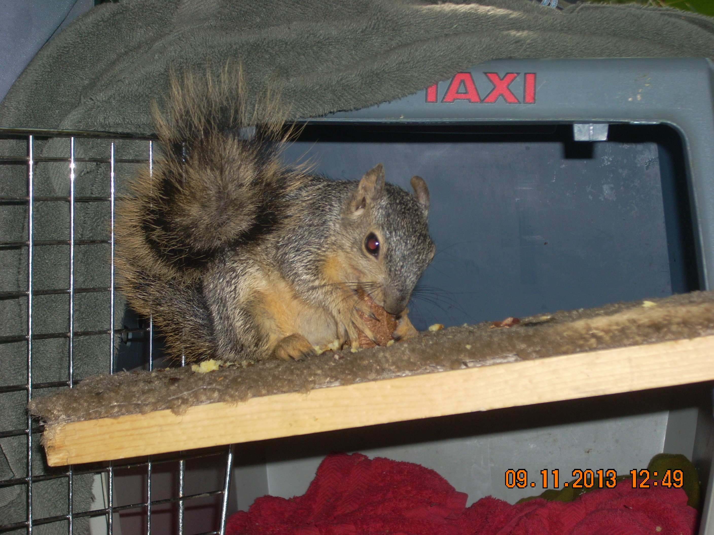
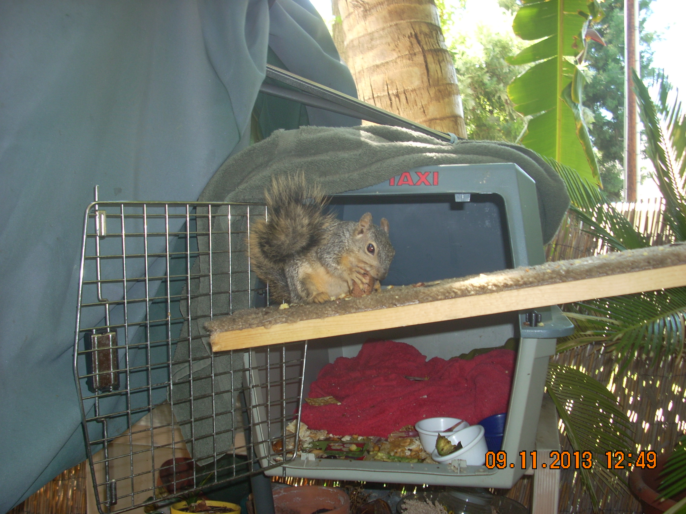
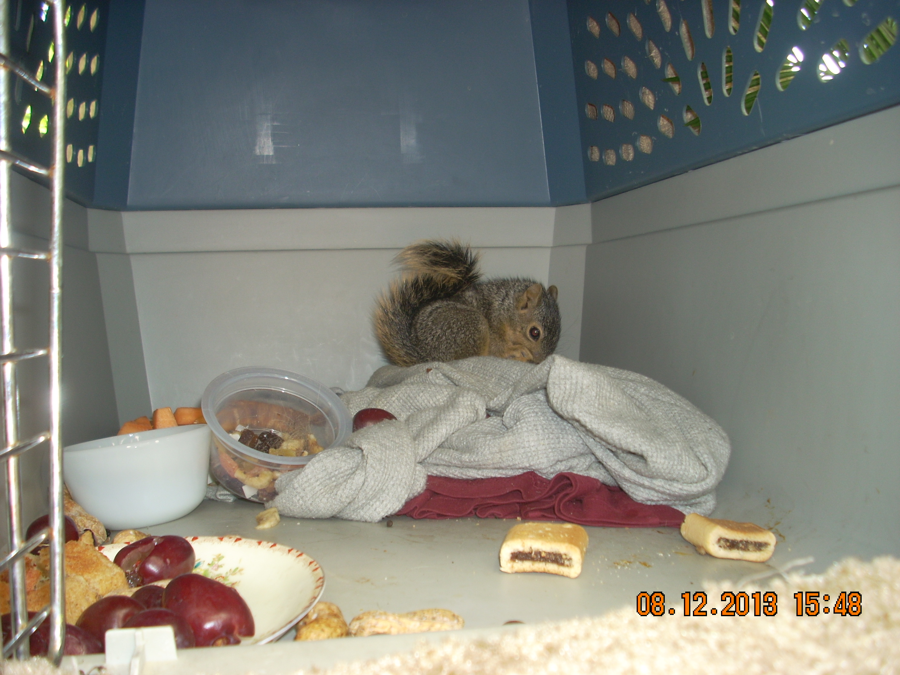
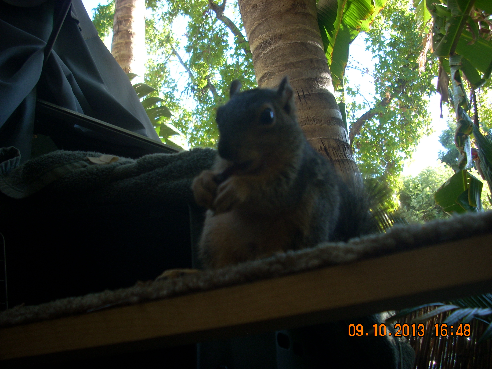
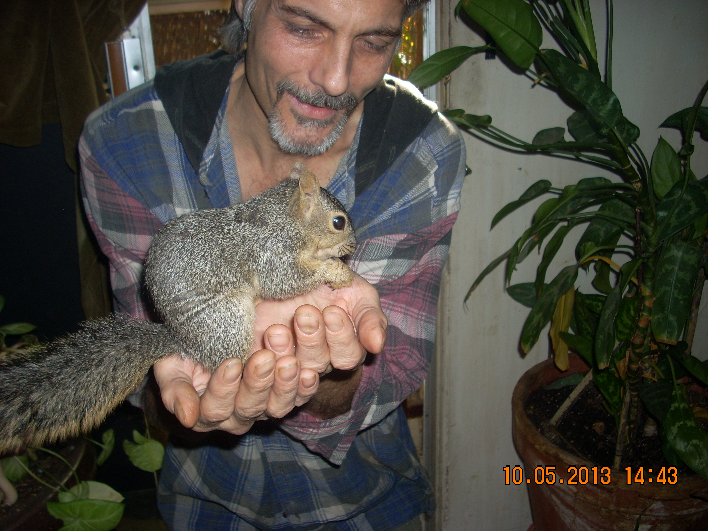
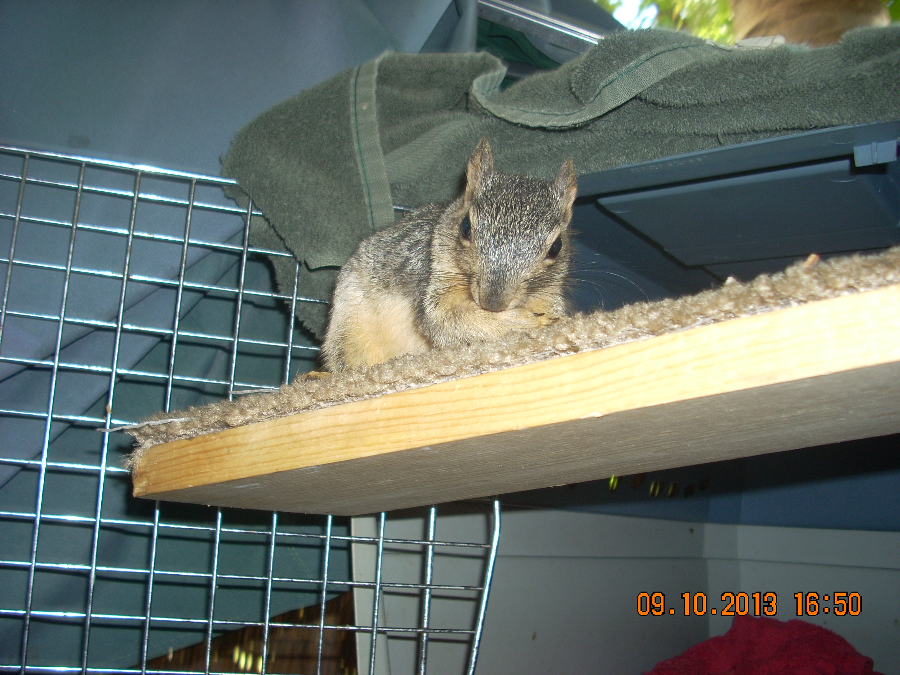
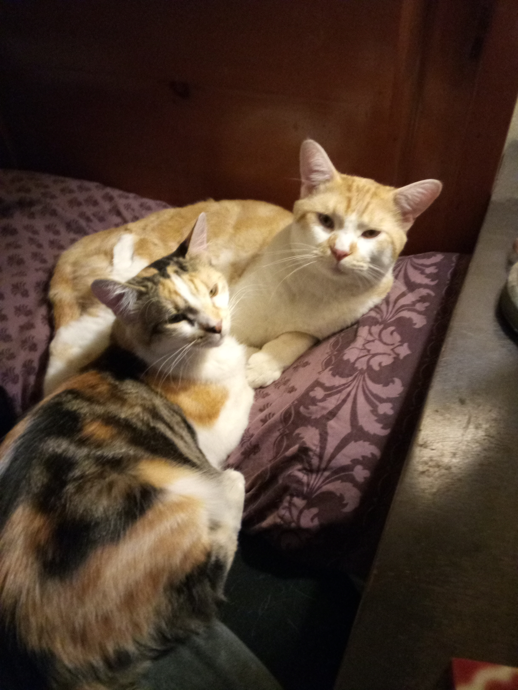

We set up a cat carrier with a board run to the tree next to our porch; yet throughout Little's life he regularly came in through the cat door to visit; and raid our pantry for peanuts. Little also regularly jumped on my head from our porch umbrella when he wanted to visit! We learned baby squirrels must have B vitamins to survive to grow to this point or they will not make it; and squirrels do not like to take their vitamins!
  Little was tiny when we found him laying on the lawn after tree trimming maintenance; we raised him inside and bottle fed him formula and B vitamins until he was able to consume solid foods. Finally we were able to move him to his outside flat; yet he often preferred to be with us in ours!
  Little thrived in his new condo; coming and going and exploring his world, and he always loved to eat. Then after he had gotten bigger we did not see him for a long while; then one day he returned with a mate and a very chewed up ear from scraping we assumed. After this we regularly left food out for them, and he would frequently invite himself him to visit or raid the pantry!
This is Max and our beloved orange tabby Boo Boo who was with us over 20 years
This is Nala and Simba who we adapted earlier in 2021